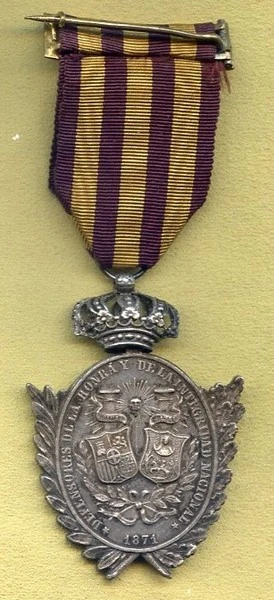
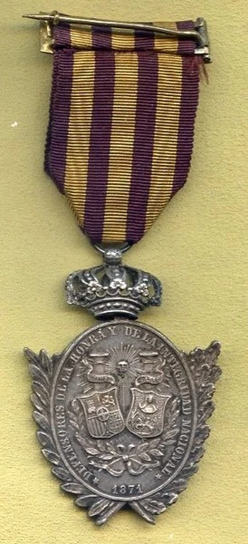

Real Decreto de 10 de noviembre de 1871. Para premiar a los voluntarios del Ejercito de Cuba. Ovalada, de plata, elíptica con ramas de roble y palma, corona Real. Anverso busto del Rey con la inscripción “Amadeo 1º de España a los voluntarios de la isla de Cuba”, reverso escudos de España y Cuba, leyenda: “Defensores de la honra y de la integridad nacional” y “1871” de Cinta roja y cantos y 3 listas amarillas.
 
